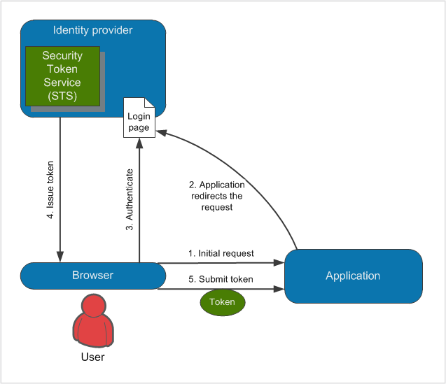

Claims-based authentication
Claims-based authentication is a mechanism which defines how applications acquire identity information about users. When a user tries to access a restricted section of Kentico, for example the administration interface, the system redirects the user to a logon page of an Identity provider. The identity provider authenticates the user and issues a security token provided by a Security Token Service (STS). This token carries information about the authenticated user (the user's identity), which is referred to as claims. Based on the trust of the application to the identity provider, the application then treats the user as authenticated. The application also authorizes the user to access features and functionality according to the claims in the token.
This authentication model enables users to authenticate on one domain and gain access to all other domains that trust the same identity provider (running on-premises or in the cloud). As a result, users do not need to create multiple accounts on different domains and provide their credentials every time they want to access an application or service.
Lightweight explanation
To use an analogy, imagine you are riding a motorcycle. Police officers stop you and want to know who you are and whether you are permitted to ride a motorcycle. You can show them a paper with your name and a statement that you are allowed to ride a motorcycle. Or you can present them a driver's license, which you have acquired from a government institution.
The police officers may or may not believe a piece of paper (this corresponds to the idea of authenticating users within the application itself). However, we can assume that they will trust the government (an identity provider) and its assertion that the name (claim) inscribed on the license (token) is valid and that the card holder really is allowed to ride a motorcycle (another claim). The police officers do not care how the authentication occurred, because they trust the institution.
Basic glossary
Application – in this context, it is an application which uses claims-based authentication. Also referred to as the Relying party, because the application relies on security tokens obtained from the identity provider.
Identity provider – a service that authenticates users and issues security tokens containing claims. For example, Active Directory Federation Services.
Security Token Service – a web service that packages claims into encrypted security tokens. For example, Active Directory Federation Services (ADFS) .
SAML – a standard data format, which is used for encoding security tokens. The format of SAML encoded messages is XML. SAML also stands for protocols that use claims in SAML format.
Token – a message containing claims. In Kentico, the claims retrieved from the token are only the name and email of the authenticated user.
Windows Identity Foundation (WIF) – a framework used for implementing claims-based authentication mechanisms in applications. It uses the SAML message format and WS-Federation protocol. The claims-based authentication in Kentico is based on this framework.
For more extensive information, see the Glossary on MSDN.
You can find more information about this type of authentication in Microsoft's Guide to Claims-Based Identity and Access Control.
How claims-based authentication works in Kentico

Authenticating users using a claims-based mechanism
When users try to access a restricted section of Kentico (1.), the application redirects them to a logon page of the identity provider (2.). The users authenticate to the identity provider (3.), who grants them with a token (4.), which is then passed to the application to confirm the users' identity (5.).
When users are logged in, they can access all applications that rely on the same identity provider (the single sign-on principle).
After users log out of Kentico, they are logged out of all applications that rely on the same identity provider (the single sign-out principle). Similarly, if the users log out of other applications, which rely on the same identity provider as your Kentico application, they are automatically logged out of Kentico as well.
Identity provider requirements
Currently, identity providers must fulfill the following requirements to work with the default claims-based authentication in Kentico:
Must be backward compatible with the sign-in request message format used by ADFS version 1.0 (see SignInRequestMessage for technical details).
Must support SAML version 1.0, SAML version 2.0 is not supported.
The returned token must provide a claim containing the user name and properly declare the name claim type.
As a result, the authentication may not work correctly for certain identity providers (such as OneLogin). To use incompatible identity providers, you need to set up custom claims-based authentication.
Session expiration
When using claims-based authentication, the session is established in the following way:
A user authenticates using the identity provider.
A session is initiated for the user on the identity provider's side.
The user is redirected to the Kentico website.
Another session is initiated in Kentico, based on the forms authentication mechanisms (Kentico creates the authentication cookie).
When the user's session (authentication cookie) expires in Kentico, the session on the identity provider's side may still be active. In such cases, the user is logged out of Kentico, but not out of other applications that trust the same identity provider.
Therefore, it is recommended to set the same session expiration interval for Kentico and the identity provider (see Web.config file settings).
Managing users and permissions
When a user signs into Kentico using claims-based authentication, the system creates a corresponding user in the system with the Is external flag enabled. If you want to assign permissions to users, you have to assign the permissions to the user profiles created in Kentico. The claims-based authentication implemented in Kentico handles only the authentication of users (uses only the name and email of users from the tokens), you have to configure the authorization of users (permissions and roles) in Kentico itself.
Configuring claims-based authentication
To start using claims-based authentication:
Establish an identity provider service (for example Active Directory Federation Services).
Configure the service so that it accepts your Kentico application as a relying party.
Note: Kentico currently does not provide a Federation Metadata file or endpoint describing the application – you need to enter the data required for the relying party configuration manually.
Establish an administrator account in Kentico so that you do not lose access to the administration interface.
When you enable claims-based authentication, the system automatically disables the following features:
Mixed authentication mode of claims-based and forms authentication is also not supported.
Establishing an administrator account
Before you start configuring the claims-based authentication, first create a user account with administrator access. This will allow you to sign in as an administrator after you enable the claims-based authentication.
Open the Users application.
Create a new user:
User name: a user name which you will also use to create a user in the identity provider
Full name: your full name
Click Save.
On the General tab, set the following values:
Privilege level: Global administrator
Is external user: yes
Click Save.
After you enable the claims-based authentication, sign in as this user to gain administrator permissions.
Disabling claims-based authentication without administrator access
If you have already enabled claims-based authentication and you do not have access to the Kentico administration interface, add the CMSEnableWIF key to the web.config file and set it to false. This overwrites the settings in the user interface and disables claims-based authentication.
<add key="CMSEnableWIF" value="false"/>To enable the claims-based authentication again, remove the key or set it to true.
Enabling and configuring claims-based authentication
Note: You may need to set up SSL for your site to use certain identity providers.
Open the Settings application.
Navigate to the Security & Membership -> Authentication -> Claims-based authentication category.
Configure all of the settings in the category:
General
Enable WIF authentication
Enables claims-based authentication.
Users need to log in through the identity provider specified by the settings below (for example Active Directory Federation Services). Disables the standard authentication mechanisms in Kentico.
Identity provider URL
Specify the URL of your identity provider's WS-Federation passive endpoint.
You can find the value in the provider's configuration interface or WS-Federation metadata.
Example: https://adfs.net/adfs/ls
Security realm
Enter a URI that identifies your website or application. You can use your website's domain name (and virtual directory if applicable) in most cases.
The value must be exactly the same as in the relying party configuration of your identity provider, including letter case, any trailing slashes and the protocol (http or https).
Allowed audience URIs
URIs of allowed audience for the identity provider, separated by semicolons. The value must match the corresponding relying party settings of your identity provider, including letter case, any trailing slashes and the protocol (http or https).
To allow the authentication for all restricted sections of your website and the Kentico administration interface, use the base domain name of the website.
Trusted certificate thumbprint
Enter the thumbprint of the certificate used to secure the communication between Kentico and the identity provider. You can typically find the certificate thumbprint in the provider's Key/Certificate configuration.
Certificate validator
_________________________Sets the validation mode used for the X.509 certificate specified in the Trusted certificate thumbprint setting.
Chain trust – accepts certificates whose chain of trust leads to a trusted certification authority. The certificate must be installed on the server hosting Kentico in the Local Computer -> Trusted People certificate store.
Peer trust – accepts self-issued certificates. The certificate must be installed on the server hosting Kentico in the Local Computer -> Personal certificate store.
Peer or chain trust – accepts self-issued certificates, or certificates with a chain that leads to a trusted certification authority.
None – no validation of the certificate is done and the system accepts any certificate with the given thumbprint.
Click Save.
The Kentico application now uses claims-based authentication and no longer has direct control over the user authentication process.
Creating custom login and logout actions in claims-based authentication
You can configure your own actions that the system perform after a user accesses a restricted section of Kentico or after a user tries to log out. See Handling custom claims-based authentication for an example.